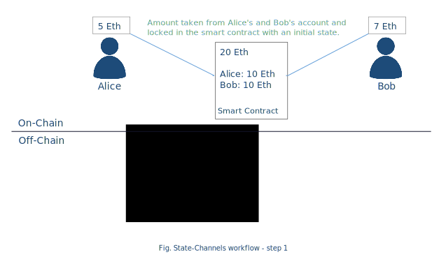
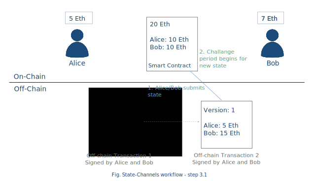

Concepts
2nd Layer Scaling
A DLT (Distributed Ledger Technology, e.g. Blockchain) cannot simultaneously provide secure and trustworthy consensus – often achieved via complex and slow operations like Proof of Work (PoW) or Proof of Stake (PoS) algorithms – and high transaction volume and throughput.
Here 2nd layer protocols come to the rescue: by reducing the number of transactions with the underlying DLT and letting most transactions happen “off-chain”, i.e. directly between peers via so-called state channels, transactions can be scaled both in volume and rate on the second layer while the first layer (DLT) serves as a notary or escrow service providing the necessary security guarantees:

State Channels
State channels are a scalability technology in which the transactions (i.e exchange of states) between the users takes place directly outside of the blockchain or we can say off-chain.
State channels provide an ad-hoc solution for time-constrained problems. As the cost of these transactions via state channels can be near-nil and transaction speed is only limited by the underlying peer-to-peer communications technology, they provide a suitable basis for performing micro-transactions repeatedly over a period of time. Scaling transactions for permanent or long-running problems could be better achieved via other technologies like sidechains.
A state channel protocol can be compared to a pre-paid account, where some assets are blocked in the beginning, then the transactions over these assets are performed and finally the resulting state is published and executed.
Therefore, the lifecycle of a state channel consists of four phases:
Open: Publish initial state (block assets)
Transact: Exchange states directly
Register: Publish final state
Close: Execute final state
These four phases are now described in more detail.
Phase 1: Open
Locking amount x (e.g. money or assets) from all involved parties, by using a smart contract on the DLT. This will be the initial state for the further off-chain transactions.
Phase 2: Transact
In this phase, the parties will transact by exchanging states directly between them. These transactions will modify the initial state and distribute the blocked assets among the participants. The agreement to a new state must be approved by all involved parties and is performed by signing the new state and sending it to the other participants. The order of the states is maintained by using a version counter.
Phase 3: Register
After transactions are done and a final state is achieved, any of the parties can submit the final state to the smart contract. The published state is validated by the smart contract by checking if the signatures are corresponding to the included state. Publishing a state triggers a defined challenge period. During this time, the other participant of the channel can check if the published state corresponds to its final state.
If other participants find the registered state to be same as the final state, then no action is required from them. The state will be be finalized on-chain after the challenge duration expired.
On the other hand, if any of the other participants find that the state is not the latest state, then then can refute by submitting the latest state. If the version of the submitted state is higher than the version of the state registered previously, then this notify other participants about this update and restart the challenge duration.
Phase 4: Execute
Once the challenge period expires, the final available state will be executed. Each participant can then withdraw the amount corresponding to them in the channel.